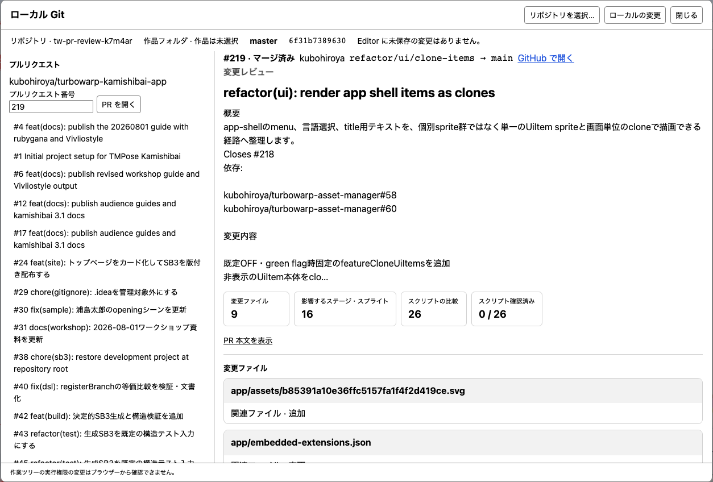
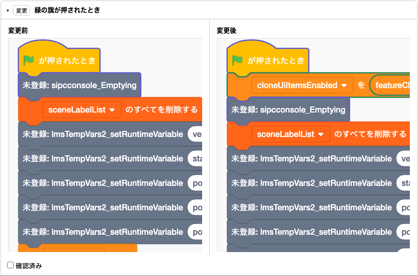

機能ガイド 10/12 · 2026年11月8日更新
作品フォルダとGitで管理する
sb3-toolchainで展開した作品フォルダを直接開いて保存し、Gitの変更・差分・履歴をEditorの中で確かめます。GitHubとの同期や、プルリクエストのスクリプト単位のレビューもできます。
10.1 sb3-toolchainで作品と拡張を管理する
sb3-toolchain は手元で使うNode.jsのツールです。import でSB3を作品データ・素材・埋め込み拡張に展開し、Gitで変更を確認できます。check で展開したデータを検証し、build で配布用のSB3を生成します。展開した作品フォルダは、Plus Editorで直接開いて編集することもできます（「作品フォルダを開いて保存する 試作」）。
作品を展開する
作品データ・素材・個別の拡張
必要に応じて拡張を一つにまとめる
- 拡張のメタデータを管理する。 拡張コードのヘッダーに書いた名前、説明、サンドボックスの要件をバンドル時に読み取ります。GitHubのコミットやnpmのバージョンを固定し、埋め込むコードのSHA-256を検証できます。更新時はAPIマニフェストを使って互換性を調べることもできます。
- 複数の拡張を一つにまとめる。 元のコードを残したまま、配布するSB3に複数の拡張を一つの複合拡張として埋め込めます。実行許可は複合拡張全体に対して判断します。
- 公式カタログの信頼条件を確認する。 公開版のPlus Editorでは、TurboWarp Plusファミリー公式カタログの条件を満たす拡張を信頼済みとして扱います。エディターはカタログに載っている取得元やコードのSHA-256を照合してから、個別の承認画面を省略します。
SB3の展開・再生成 · 拡張のバンドル · 公式カタログ
10.2 作品フォルダを開いて保存する 試作
sb3-toolchain v1で展開した作品フォルダを、SB3にまとめ直さずに開いて保存できます。フォルダの選択と書き込みには、File System Accessに対応したChromium系ブラウザー（Chrome、Edgeなど）が必要です。
作品フォルダを開く
「ファイル」→「プロジェクトフォルダを開く…」を選び、作品フォルダを選んで読み書きを許可します。作品データとローカルの画像・音声が読み込まれます。
システムフォントと Web フォントの参照は作品データに、ファイルのフォントは assets/ に保存します。
作品フォルダに保存する
- ブロック、変数・リスト、スプライトやコスチューム、スプライトの位置や大きさなどを編集します。作品を実行して変わった位置や変数の値も保存の対象です。
- 「ファイル」→「保存」を選ぶと、フォルダ内の
project.source.jsonが更新されます。保存前に、フォルダが外部で変更されていないかを確かめます。
スプライトの追加・削除・名前の変更と、コスチューム・音の追加・削除も保存します。このとき、フォルダ内の assets/ と sb3-source.json も更新し、使われなくなった画像・音声のファイルを消します。
埋め込み拡張とURLで読み込むカスタム拡張機能を含む作品も開いて保存でき、拡張機能のコードは extensions/ と embedded-extensions.json に書き戻します。拡張機能を差し替えて出どころの記録（source）を外したときは、保存のときに知らせます。
Gitで差分を確認し、sb3-toolchain build で配布用SB3を作る流れと組み合わせられます。
10.3 ローカルGitで変更と履歴を確かめる
上部の作業の流れは、作品の保存、変更の確認、手元への記録、GitHub への送信の順に並び、保存や記録の状態に合わせて現在地を示します。「変更を確認」で差分を見て、次のコミットに入れる変更をステージできます。バッジは保存済みでコミットしていないファイルの件数です。「手元に記録（コミット）」ではコミットの作成、履歴の確認、ブランチの操作ができます。同期とプルリクエストは「GitHub に送る」から開きます。
メニューバーの「ステージを開く」の左にある、ブランチのボタンから開きます。リポジトリを選ぶ前のボタンは「Git」と表示されます。押して「リポジトリを選択…」を選び、.git を持つリポジトリのルートを選びます。配下にあるsb3-toolchain v1の作品フォルダを選ぶと、変更一覧と差分がそのフォルダに絞られます。「この作品を開く」で、選んだ作品をEditorで開けます。
- 変更と差分。 ステージ済み・未ステージ・未追跡の変更を分けて表示します。ファイルを選ぶとテキストの差分、バイナリの素材ならサイズを確認できます。
- ブランチと履歴。 現在のブランチ、HEAD、ローカルブランチと直近50件のコミットを表示します。コミットを選ぶと第一親との差分を確認できます。
- 変更を記録する。 作品を保存してから、差分欄の「次のコミットに追加（ステージ）」か「すべての変更をステージ」を押します。ステージ（
git add）すると、保存済みの変更が次のコミットの対象になります。「手元に記録（コミット）」を開き、「コミットメッセージ」を書いて「記録する（コミット）」を押すと、ステージ済みの変更が手元の履歴に記録されます。記録する人は、リポジトリのGit設定（user.name・user.email）を使います。EditorはGitの設定を変えません。実行権限のあるファイルやシンボリックリンクは、ブラウザーからは記録できません。 - ブランチのボタン。 リポジトリを選ぶと、ボタンに現在のブランチ名（例：「main ▾」）が出ます。押すと、ローカルブランチ（現在のブランチに印）、GitHubにあって手元にないブランチの「… を作って切り替える」、「新しいブランチ…」、「ローカル Git を開く」が並びます。ブランチを選ぶと、パネルと同じ確かめ方で切り替え、結果を画面下に短く示します。切り替えたときは「ブランチを切り替えました。」と「作品を再読込」のボタン（作品フォルダを開いているとき）、切り替えられないときはその理由と「ローカル Git を開く」のボタンが出ます。表示は6秒で消え（ポインターを置くかフォーカスがある間は残ります）、Escapeか「×」で閉じられます。ブランチを選んでいない状態（detached HEAD）ではコミットの短いIDを、まだ記録がないときはそのことを表示します。コマンドラインなどでブランチを切り替えても、ボタンの表示は追従します。
- ブランチを切り替える・作る。 ブランチのボタンのほか、パネル左側の「ローカルブランチ」で「切り替える」を押すか、新しいブランチの名前を書いて「ブランチを作る」を押します。GitHubから取得したブランチは「作って切り替える」で手元に作れます。切り替える前に、実行を止め、すべての変更を保存して記録しておきます。切り替えた後は「作品を再読込」で、そのブランチの作品を開きます。
- 外部での操作のあと。 コマンドラインなどでGitを操作したら「再取得」を押します。「作品を再読込」は、Editorの未保存の編集を確認してから同じ作品を開き直します。
閲覧はGitの状態を書き換えません。File System Accessに対応したChromium系ブラウザーが必要です。linked worktree、サブモジュール、シンボリックリンクは対象外で、作業ツリーの実行権限の変更はブラウザーから確認できません。パネルを外すには起動URLに twPlusLocalGit=0 を指定します。このときブランチのボタンも出ません。
10.4 作品の変更をブロックで比べる
作品データ（project.source.json）の差分は、JSONの行ではなく、ステージ・スプライトごとのスクリプトとして表示できます。
- 変更のあったスクリプトだけを比較項目にし、変更前と変更後のブロックを並べて表示します。追加・削除・入力値の変更などには注釈が付き、変更された入力欄やフィールドはオレンジの枠で示します。
- 「元のスクリプト内で強調」を選ぶと、つながったスクリプトの中で変更箇所を確認できます。
- 分割・結合したスクリプトも、両方の版に共通するブロックを手がかりに一つの項目にまとめます。
- 変数、リスト、コスチューム・背景、音、モニターなど、スクリプト以外の変更は別に示します。
ブロック差分では、変更箇所を中心に背景に黄色い縦横の帯が出ます。同じ横位置や高さにポインターを置くと対応する帯が濃くなります。縦横のスクロールバーの黄色い目印は、画面外も含めた変更箇所の位置を示します。
Editorに定義がない拡張ブロックは、名前と接続が分かる代替ブロックで示します。拡張コードの取得や実行は行いません。
10.5 GitHubと同期する（fetch・pull・push）
ローカルGitパネルで「GitHub に送る」を開き、「GitHub 接続」で接続方式を選びます。接続すると、現在のブランチとGitHubのHTTPSリモート origin に対して次の操作ができます。
| 操作 | 内容と条件 |
|---|---|
| fetch | リモートの変更を取得し、Gitのメタデータを更新する |
| Pull（fast-forward のみ） | 実行を止め、未保存の編集とローカルのGitの変更がない状態で取り込む。取り込んだあとは「作品を再読込」で開き直す |
| push | 接続時に「push を許可する」を選んだ場合だけ送信する。強制pushは行わない |
pullはローカルの状態を確認し直してから適用し、fast-forwardできない場合はローカルのブランチとファイルをそのまま残します。pushの結果が不明な場合は、送り直す前にfetchでリモートのブランチを確認します。
GitHubとの接続 · fetch・pull・push · 二重pushの防止
GitHub Appで接続する場合の準備
CloudflareとDesktopのデバイスコード認証では、接続先を運用する人が用意したGitHub Appを使います。公開版のEditorを使う人がGitHub Appを作る必要はありません。接続先を運用する人や自分で接続先を立てる人は、GitHub Appの作り方（英語）を参照してください。
- 運用する人から知らされたAppのページ（
https://github.com/apps/<Appの名前>）で「Install」を押します。 - インストール先のアカウントを選びます。組織のリポジトリでは、組織のOwnerの承認が必要です。
- 「Only select repositories」を選び、Editorで使うリポジトリだけを選びます。
- ローカルGitパネルの「GitHub 接続」を開き、接続方式を選んで接続します。GitHubの認可の画面が出たら、Appの名前を確かめて認可します。pushやレビューの送信が必要なときは、接続の画面でその許可を選びます。
- 使わなくなったら、Editorで接続を切ります。AppはGitHubの「Settings」→「Applications」→「Installed GitHub Apps」からアンインストールでき、認可は「Authorized GitHub Apps」から取り消せます。
Appに権限が追加されたときは、「Installed GitHub Apps」のそのAppに承認を求める表示が出ます。承認するまで、追加された権限を使う機能（例：PRのレビューの送信）は使えません。
接続のしくみと安全のための注意
EditorはGitHubのトークンを受け取りません。どちらの接続方式でも、Editorが持つのは短い期限の接続用の鍵だけです。Gitの通信は中継役（プロキシ）を通ります。中継役が通すのはGitの読み書きの通信だけで、通信のたびに次のことを確かめます。
- 要求したページ
- 接続用の鍵
- 接続したときのリポジトリ
- pushを許可しているか
| 方式 | しくみ |
|---|---|
| ブラウザー版（Cloudflare） | GitHubの認可の画面で認可すると、トークンは運用する人のサーバーに暗号化して保管されます。ログインは最長8時間で、そのあとは接続し直します |
| Desktop版 | ローカル Git の接続設定に、Desktop が利用できる認証方式が表示されます。GitHub App を設定している場合はデバイスコードでも認可できます |
GitHubに入力するコードは、自分のEditorの画面に出たものだけにしてください。他人からメールやチャットで送られたコードを入力すると、その人にリポジトリの読み書きを許すことになります。認可の画面ではAppの名前と権限を確かめます。心当たりのない認可は、GitHubの「Settings」→「Applications」→「Authorized GitHub Apps」から取り消します。
対応する Desktop では、client ID を設定せずに「Fine-grained 個人アクセストークン」または「手元の Git の認証情報」を選べます。PAT は Desktop のダイアログに入力します。保存を選ぶと、利用可能な OS の保護機能で暗号化されます。Git の認証情報は、選択したリポジトリに適用される credential helper があるときに表示されます。GitHub アカウント名を入力し、Desktop の確認画面で同意すると接続します。
10.6 プルリクエストをスクリプト単位でレビューする
GitHub のプルリクエスト（PR）を、変更全体の概要から個々のスクリプトまで確認できます。以下は、2026年11月8日の公開版（840d37f）で公開リポジトリの turbowarp-kamishibai-app の PR #219 を開いた例です。
- PRを選ぶ。 メニューバーの「ステージを開く」の左にあるブランチのボタン（リポジトリを選ぶ前は「Git」と表示されます）を押し、「ローカル Git を開く」を選び、「リポジトリを選択…」で、対象の GitHub リポジトリが
originに設定されたローカルのリポジトリを選びます。「GitHub に送る」を開いて「プルリクエスト」を押し、一覧から対象の PR を選ぶと比較が開きます。各行のアイコン、番号の色、状態ラベルで、マージ可能、競合あり、ドラフト、マージ済みなどを見分けられます。 - 変更概要を確認する。 右側の「変更レビュー」でPRのタイトルと説明を読み、変更ファイル数、影響するステージ・スプライト数、比較できるスクリプト数を確認します。説明が省略されているときは「PR 本文を表示」で全文を開けます。

公開版でPR #219を開いたところ。左でPRを選び、右で変更の規模を確認します。下の「変更ファイル」から比較を読み進めます。 - スクリプトをブロックで比較する。 「変更ファイル」を下にたどり、
project.source.json（この例ではapp/project.source.json）の中から、対象のステージやスプライトの見出しを探します。その下に並ぶ変更のあったスクリプトから、例の「緑の旗が押されたとき」を展開します。左の「変更前」と右の「変更後」を見比べ、枠で示されたブロックがスクリプトのどこにあるかを確認します。長いスクリプトや横に広いブロックは、比較欄をスクロールして確認できます。
PR #219のスクリプト比較。右側の緑の枠が、開始直後に追加された変数設定ブロックを示します。比較画面に登録されていない拡張ブロックは、元の位置に灰色の「未登録: …」として表示されます。


比較を読み終えたら、スクリプトの下の「確認済み」で進み具合を記録できます。この印はブラウザーに保存され、パネルを閉じても Editor を再読み込みしても残ります。PR が更新されると、内容が変わったスクリプトの印だけが外れます。印は作品ファイルとGitには書き込まれません。「ローカルの変更」で手元の差分表示に戻れます。
比較には PR のマージベースと head を使います。未接続時は公開 API で公開 PR を比較でき、API の利用上限が適用されます。「GitHub 接続」中は接続で許可された非公開リポジトリの PR も一覧から選べます。PR の head とベースのブランチを Git Smart HTTP で取得し、手元の Git オブジェクトで比較します。題名やベースを取得できない場合は、一覧に PR 番号を表示し、比較するベースのブランチを選べます。比較の仕組みは作品の変更をブロックで比べるで説明しています。
PR の版を実行するには、Git パネルから作品フォルダを開いておき、接続中に開いた PR の「pr/… として手元で開く」を選びます。比較したコミットにローカルブランチを作って切り替え、その版の作品を開き直します。実行中、未保存の編集や作業ツリーの変更がある場合、同名ブランチが別のコミットを指している場合は切り替えが止まります。確認を終えたら、「ローカルの変更」で元のブランチに切り替え、「作品を再読込」を選びます。確認用のブランチは手元に置いておきます。